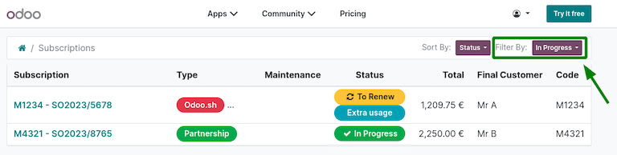

HTTPS certificate (IoT)¶
What is HTTPS?¶
Hypertext Transfer Protocol Secure (HTTPS) is the secure version of Hypertext Transfer Protocol (HTTP), which is the primary protocol used to send data back and forth between a web browser and a website. HTTPS is encrypted in order to increase the security of data transfer.
HTTPS uses an encryption protocol to encrypt communications. The protocol is called Transport Layer Security (TLS), although formerly it was known as Secure Sockets Layer (SSL).
HTTPS occurs based upon the transmission of TLS/SSL certificates, which verify that a particular provider is who they say they are.
Note
In this documentation and throughout Odoo the term “HTTPS certificate” will be used to define the fact that the SSL certificate is valid and allows a HTTPS connection.
Why is it needed?¶
In order to communicate with certain network devices (in particular for payment terminals), the usage of HTTPS is mandatory. If the HTTPS certificate isn’t valid, some devices won’t be able to interact with the IoT Box.
How to obtain a Hypertext Transfer Protocol Secure (HTTPS) certificate¶
The generation of the HTTPS certificate is automatic.
The IoT Box will send a specific request to https://www.odoo.com which will send back the HTTPS certificate if the IoT box and database are eligible.
Internet of Things (IoT) eligibility¶
The database should be a production instance. The database instance should not be a copy, a duplicate, a staging, or a development environment.
The Odoo subscription must:
Have an IoT Box Subscription line.
Status must be In Progress.
If the subscription is linked to a https://www.odoo.com portal user check the information on the portal subscription page.
In this case, both subscriptions are considered “in progress” as the Filter By: In Progress was used.¶
Note
If the subscription is in question, contact the database’s Account Manager or Partner regarding the matter.
Troubleshooting Hypertext Transfer Protocol Secure (HTTPS) certificate errors¶
If anything goes wrong during the process of the “HTTPS certificate” generation or reception, a specific error will code be given on the IoT box home page.
Tip
Accessing the IoT box homepage will check for the presence of the “HTTPS certificate” and will attempt its generation if it is missing. As such, if there is an error on the IoT box home page, refresh the IoT home page to see if the error disappears.
ERR_IOT_HTTPS_CHECK_NO_SERVER¶
- Reason:
The configuration regarding the server is missing. In other words, the Odoo instance is not connected with the IoT box.
- Solution:
Ensure that the server is configured.
See also
ERR_IOT_HTTPS_CHECK_CERT_READ_EXCEPTION¶
- Reason:
An unhandled error happened when trying to read the existing HTTPS certificate.
- Solution:
Ensure that the HTTPS certificate file is readable.
ERR_IOT_HTTPS_LOAD_NO_CREDENTIAL¶
- Reason:
The contract and/or database UUID is missing.
- Solution:
Ensure that both values are configured as intended. To modify them, go to the IoT box home page, and navigate to Credential.
ERR_IOT_HTTPS_LOAD_REQUEST_EXCEPTION¶
- Reason:
An unexpected error happened when the IoT box tried to reach https://www.odoo.com. The causes are likely due to the network infrastructure/configuration:
The IoT box does not have access to internet.
The network does not allow the IoT box to communicate with https://www.odoo.com. This may be due to network devices preventing the communication (firewalls, etc.) or the network configuration (VPN, etc.).
Note
More information regarding the error that occurred can be found in the full request exception details, which are in the IoT box logs.
- Solution:
Warning
Consult with your system or network administrator should this issue arise. This error code depends on the network infrastructure and goes beyond Odoo support’s service scope.
ERR_IOT_HTTPS_LOAD_REQUEST_STATUS¶
- Reason:
The IoT-box was able to reach https://www.odoo.com but received an unusual HTTP response (status codes).
This error code will also give the HTTP response status codes. For example, if the error reads
ERR_IOT_HTTPS_LOAD_REQUEST_STATUS 404it means that the page returned a 404 error, which is the “Page Not Found” code.- Solution:
Check if https://www.odoo.com is down using a web browser, as it’s possible that it is down due to maintenance.
If https://www.odoo.com is down due to maintenance, unfortunately there is nothing that can be done but instead wait for it to recover.
If https://www.odoo.com is not down due to maintenance, open a support ticket on the matter. Ensure that the 3 digits status code next to the code error is included in the support ticket.
ERR_IOT_HTTPS_LOAD_REQUEST_NO_RESULT¶
- Reason:
The IoT box was able to reach https://www.odoo.com but it refused to deliver the HTTPS certificate.
- Solution:
Ensure that the IoT box and database are eligible for a certificate: Internet of Things (IoT) eligibility.
How to ensure that the HTTPS certificate is correct¶
If the certificate has been applied successfully, a new HTTPS URL for the IoT box ending
with .odoo-iot.com will appear on the Odoo database, inside of the
application on that specific device’s form.

When navigating to the URL in a browser a secured HTTPS connection will be established.
Padlock in Chrome on Windows 10 attesting the fact that the connection is secured in HTTPS.¶
The IoT-box homepage will now display an OK status next to HTTPS certificate. The
drop-down menu icon, when clicked, will reveal information regarding the certificate.
Domain Name System (DNS) issue¶
If the IoT box can be accessed from its IP
address but not the Odoo assigned domain: .odoo-iot.com; then the IoT
box is likely running into a DNS issue. On some browsers, it will give
an error code mentioning DNS (like DNS_PROBE_FINISHED_NXDOMAIN).
These DNS issues may appear as the following in different browsers:

Domain Name System (DNS) issue solution¶
Should the router allow the DNS to be manually changed, change the DNS to use Google DNS.
If your router doesn’t allow for this, then a change will need to be made on the DNS settings of each of the devices using Google DNS. This will need to occur on every device that plans to interact with the IoT box (e.g. computer, tablet or phone). The individual device configuration processes can be found on the website of the device’s manufacturer.
Note
Other IoT devices such as payment terminals likely won’t need their DNS settings changed as they are already configured with custom DNS.
Warning
Consult with your system or network administrator should this issue arise. This error code depends on the network infrastructure, and it goes beyond Odoo support’s service scope.